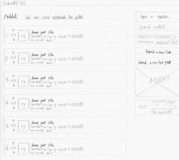
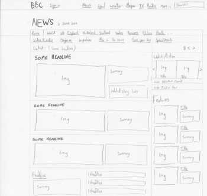

This website is a news/link aggregator, driven entirely though user-submitted content which is up or down-voted by other users. It serves to provide up-to-date 'internet news' based on subscribed subreddits (topics). The visual challenge wit this site is in providing enough information on each submitted link to the user to allow them to determine if it is worth them viewing it, without crowding the page. Thumbnails allow for immediate previewing of images, titles are generally fairly descriptive of the articles linked to, and the number of 'upvotes' is clearly displayed to the left of each submission to give an indication of the submission quality.
Amazon.co.uk
This website solves the problem of users wanting to browse goods without having to physically visit various shopping outlets. In addition to this, users can read detailed reviews from others users in order to be better informed about their purchases. The visual challenge is in attempting to market the best deals whilst not bombarding the user with information. This is achieved via carousels, slowly transitioning through multiple offers over time.

BBC News
BBC News is a publicly funded news website, covering both UK and international news. The visual challenge with this site is in drawing the eye to the most important news stories, whilst still offering clear links to other news stories. The site resolves this by giving a large amount of screen real estate (and large carousel with rotating images) to a single story in the top-left, then reducing amounts of space to stories down though column until only a list of headlines are displayed. Further down the page, news categories are displayed, with each category having a single 'main story' (with thumbnail image) followed by a second headline.
